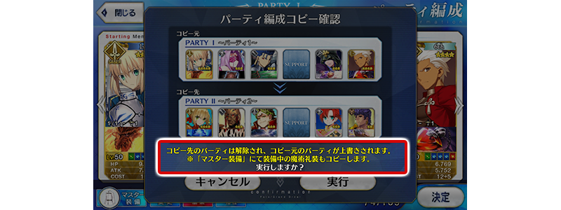
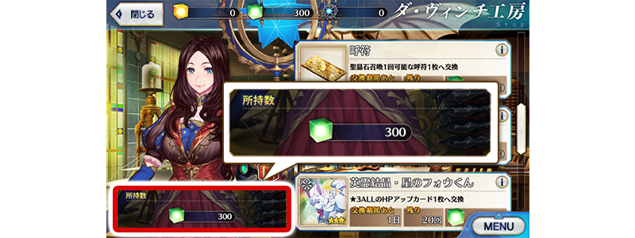

- 2/15
- 【來自迦勒底廣報局】關於2月的遊戲更新
非常感謝各位使用「Fate/Grand Order」。
來自迦勒底廣報局，告知關於預定2019年2月的下次遊戲更新。
以下介紹更新後反映的更新內容中，具有代表性的更新內容。
①隊伍編成時，在變更Servant和概念禮裝途中的畫面中也可藉拖曳變更配置
「MENU」＞「編成」的隊伍編成畫面，以及關卡開始前等的隊伍確認畫面中，選擇・替換Servant和概念禮裝選擇的情況，選擇「決定」前會是隊伍編成途中狀態，在此狀態變得也可藉拖曳Servant來變更配置。
※開發中畫面。
②隊伍編成畫面中，「複製隊伍」時也會同時複製魔術禮裝
隊伍編成畫面中，選擇「複製隊伍」時，不只Servant和概念禮裝，魔術禮裝也變得會同時複製。

※開發中畫面。
③達文西工房中，修改為在交換可確認必要道具的持有數
達文西工房的各種交換畫面中，變得會常駐在左下顯示交換必要道具的持有數。

※開發中畫面。
以上為預定2019年2月實施的下次遊戲更新主要內容。
另外今後，也預定在期間限定活動和期間限定宣傳活動中，會有將通過主線關卡設為開放條件的情況。
無論如何，如果推進主線關卡的攻略會有所幫助。
今後也請多多指教「Fate/Grand Order」。